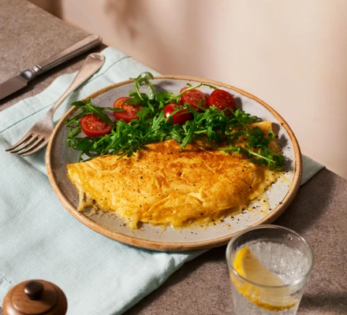

Omelette Recipe:

Description:
So now we are going to cook omelette just following these steps:
Ingredients:
- 2 eggs
- Olive oil
- Butter
- Mature cheddar
Steps:
-
Crack the eggs into a jug and whisk well with a fork. Season with a
pinch of salt.
-
Heat the oil and butter in a medium non-stick frying pan over a
medium-low heat. Once the butter has started to foam, pour in the eggs
and tilt to cover the base of the pan. Using a spatula, gently draw in
the eggs from four points so there are folds in the centre. Do this once
or twice, then leave the eggs to cook gently for 2-3 mins, until there's
a little raw egg still in the middle. Sprinkle over the cheese and,
using your spatula, gently fold the omelette in half. Switch off the
heat and let the residual heat from the pan melt the cheese for 1 min.
Slide onto your plate and sprinkle over some black pepper to serve.
Back to the home page